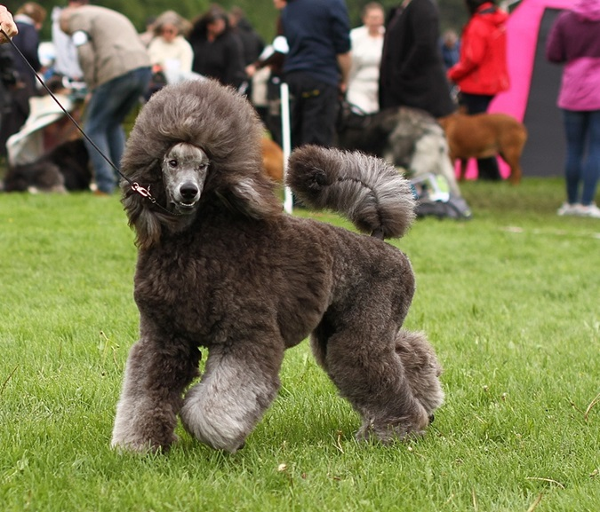

Our dogs
Shirkus Ombra Dragon
"Zizu"
Shirkus Magical Raya
"Raya"
Shirkus Shaded Stargazer
“Zpicey”
Shirkus Legendary Eevee
"Eevee"

Shirkus Chrome Knife Thrower
“Fant”
Shirkus Kiss Of Life
“Nala”
Shirkus Graystone Zaphire
“Ziera”
Shirkus-Cezanne
“Izzy”
Shirkus Circle Of Life
“Kira”